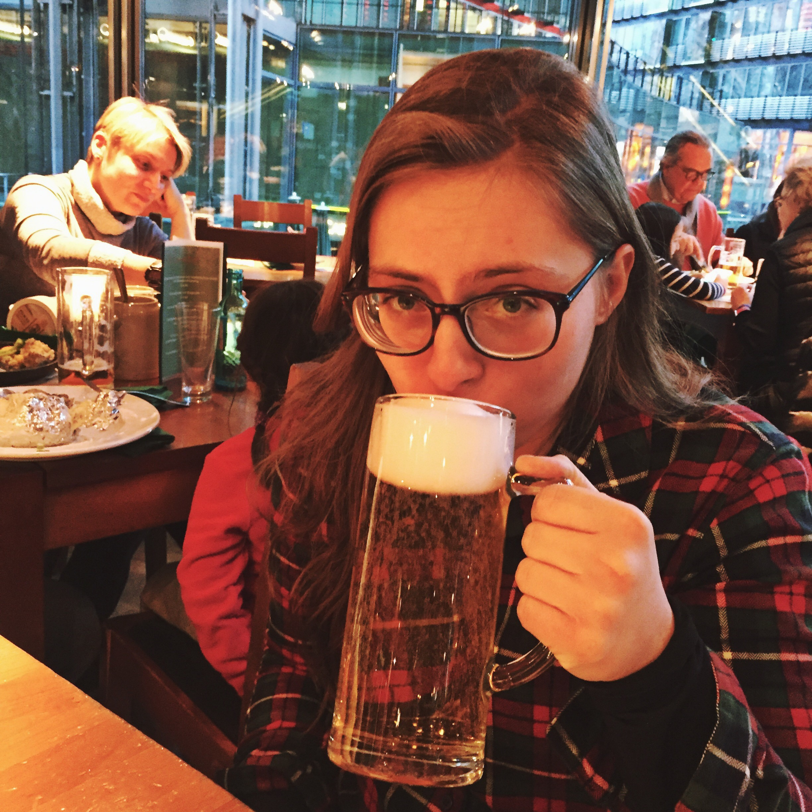

Rachel has been manning the beer shelves of Luvians Bottleshop for the better part of a decade
Favourite beer? - Magic Rock's Salty Kiss
Favourite pub in town? - Aikman's!
Favourite bar ever? - Evil Twin's Torst in Brooklyn or Monkey Bar Berlin - for the views
Emily
Emily works in St Andrews Brewing Company
Favourite beer? - Wild Beer Rubus Maximus
Favourite pub in town? - Brew Co (obviously)
Favourite bar ever? - Elephant Belgian Pub, Warsaw
This website has been brought to you by the knowledge of Code First: Girls - St Andrews and the hospitality of St Andrews Brewing Company